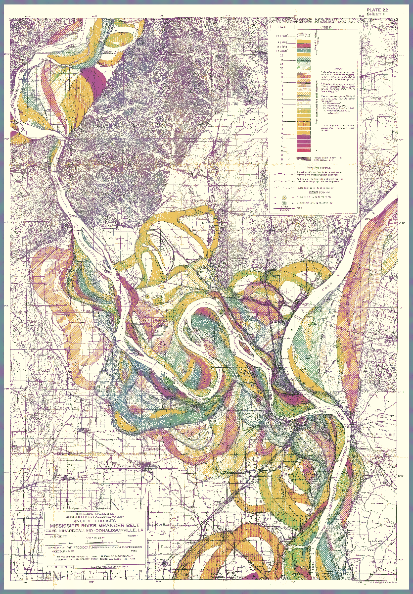

hello!
nsf biosketch >>
<< github profile
selected talks >>
<< google scholar
michelle catherine kelly
aquatic ecosystem ecologist &&
data scientist

Figure 1. The Mississippi River and its historical flow-paths, created by Harold N. Fisk for
Geological Investigation of the Alluvial Valley of the Lower Mississippi River
(1946).
image source >>